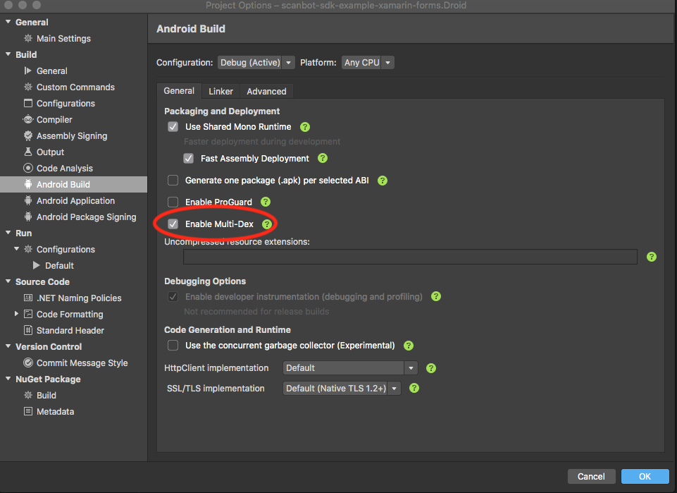
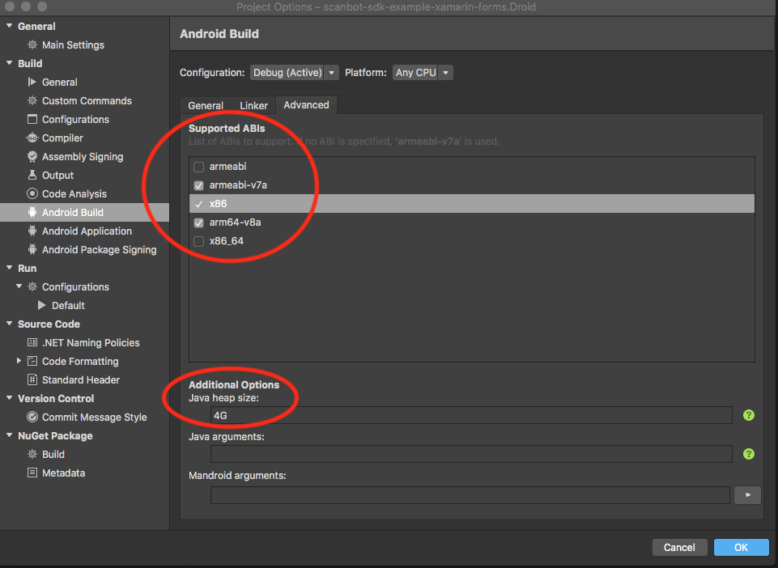

Scanbot SDK for Xamarin and Xamarin.Forms
Introduction
The Scanbot SDK brings scanning and document creation capabilities to your mobile apps. It contains modules which are individually licensable as license packages. For more details visit our website https://scanbot.io/sdk
Requirements
Dev Tools
- Latest version of Microsoft Visual Studio with Xamarin Platform
- For Xamarin.Forms projects: Xamarin.Forms v2.2+ and higher
- For iOS development: Mac OS with latest Xcode and Command Line Tools
Mobile Platforms
- Android 4.1 (API Level 16) and higher
- iOS 9 and higher
Mobile Devices
- Rear-facing camera with autofocus
- Supported CPUs and Architectures:
- Android:
armeabi-v7, arm64-v8a, x86, x86_64 - iOS:
arm64, armv7, x86_64, i386
- Android:
No Internet Connection Required
The Scanbot SDK works completely offline. It doesn’t even contain any networking code. This can easily be verified by routing all networking traffic coming from the app through a proxy. All data generated by the Scanbot SDK is only stored on the end users device and in absolutely no case ever transferred to a server / cloud service controlled by us. You as the customer will need to take care of uploading the scans / data to your backend, if desired.
Example Apps
Check out our example apps for Android and iOS on GitHub:
Getting started
Download & Installation
The Scanbot SDK is provided as NuGet packages
- ScanbotSDK.Xamarin - contains the Scanbot SDK Xamarin bindings and wrappers for Android and iOS
- ScanbotSDK.Xamarin.Forms - provides portable ScanbotSDK wrappers for use with Xamarin.Forms
Install ScanbotSDK.Xamarin.Forms if your project is based on Xamarin.Forms, otherwise install ScanbotSDK.Xamarin.
You can directly install them in Visual Studio IDE.
Open your App-Solution in Visual Studio, select your iOS or Android project and click on the menu item Project -> Add NuGet Packages.
Make sure nuget.org is selected as source and search for the package.
By clicking on Add Package the Scanbot SDK will be downloaded and installed into your project. Do that for both your iOS and Android projects. Also, ScanbotSDK.Xamarin.Forms must be installed in the portable app project (if one exists - not necessary if you’re using a shared project).
Android settings
Enable Multi-Dex
Android Project => Options => Android Build => General => Enable Multi-Dex

ABI Settings
The Scanbot SDK uses native libraries under the hood and supports following ABIs:
armeabi-v7a, arm64-v8a, x86 and x86_64.
Please adjust the Supported ABIs configuration in your Android project settings accordingly:
Android Project => Options => Android Build => Advanced => Supported ABIs …

Please note:
In most cases the architectures x86 and x86_64 can be removed for the release (production) build,
since they are only used on emulators and on some rare devices with the Intel Atom architecture.
The support for the x86_64 architecture was added in version 1.4.0 of ScanbotSDK.Xamarin.
Also, by removing the “x86” architectures the size of the app package (APK) will be reduced.
Furthermore please increase the Java Heap Size value to 4G. This is required for the build process.
ProGuard
If you need to enable ProGuard for your Android release build, please check this full list of the ProGuard rules for the Scanbot SDK.
Permissions
Required permissions for Android
Make sure to add the Camera permission in your AndroidManifest.xml file:
<uses-permission android:name="android.permission.CAMERA" />
<uses-feature android:name="android.hardware.camera" />
Required permissions for iOS
Add the following properties to your Info.plist file:
- “Privacy - Camera Usage Description” (
NSCameraUsageDescription). As value describe why your app wants to access the device’s camera.
License Key
In order to run the Scanbot SDK functionality within your production app you have to purchase and use a valid Scanbot SDK license.
Each license key is valid only for a given app bundle identifier. The license also defines which modules you are allowed to use. The usage of unlicensed modules will log an error to the console and terminate the app. If your license has expired any calls of the Scanbot SDK will terminate your app.
Example code for defining and using the license key string:
private const string licenseKey =
"fXbN2PmyqEAZ+btdkSIS36TuX2j/EE5qxVNcZMXYErbLQ" +
"3OBnE10aOQxYI8L4UKwHiZ63jthvoFwUevttctBk0wVJ7Z" +
"+Psz3/Ry8w7pXvfpB1o+JrnzGGcfwBnRi/5raQ2THDeokR" +
"RB1keky2VBOFYbCfYt3Hqms5txF2z70PE/SBTMTIVuxL7q" +
"1xcHDHclbEBriDtrHw8Pmhh9FqTg/r/4kRN/oEX37QGp+Y" +
"3ogwIBbSmV+Cv+VuwtI31uXY3/GkyN/pSJZspIl+exwQDv" +
"O0O1/R/oAURpfM4ydaWReRJtjW8+b1r9rUgPERguaXfcse" +
"HlnclItgDfBHzUUFJJU/g==\nU2NhbmJvdFNESwppby5zY" +
"2FuYm90LmRlbW8ueGFtYXJpbgoxNDg0NjExMTk5CjcxNjc" +
"KMw==\n";
// Xamarin
SBSDK.Initialize(application, licenseKey);
// Xamarin.Forms
SBSDKInitializer.Initialize(application, licenseKey);
Trial License
The Scanbot SDK will run without a license for one minute per session! To get an unrestricted “no-strings-attached” 30 day trial license, please submit the Trial License Form on our website.
Please kindly note that a trial license can only be used in a development and staging environment. You are not allowed to publish your app to the App Store, Play Store or any 3rd party Android App Store with a trial license.
Purchase a Production License
You can check and purchase the Scanbot SDK licenses here: https://scanbot.io/sdk.html.
App Identifier
Every app has a unique identifier (sometimes also known as “bundle identifier” or “application ID”). Your license will be bound to this identifier. To request a trial license or purchase a production license you have to provide us the bundle identifier of your app.
Updating the License in Production Apps
To renew an expired license or extend a valid license with new Scanbot SDK features, you will have to update your app in the App Store / Play Store. The expiration date and the feature list of a license are an encrypted data part of the license key string. Which means a renewal or extension of a license will cause a new license key string to be generated.
License Checks in Production Apps
If your Scanbot SDK license has expired, any call of the Scanbot SDK API will terminate your app.
To prevent this you should always check for license expiration during the runtime by calling the method IsLicenseValid().
If this method returns false, you should disable any usage of the Scanbot SDK functions or UI components.
We highly recommend to implement a suitable handling of this case in your app!
Example code for checking the license status:
// Xamarin
if (SBSDK.IsLicenseValid())
{
// Making your call into ScanbotSDK API is safe now.
// e.g. startDocumentScanner(), doSomeScanbotImageOperation(), etc.
}
// Xamarin.Forms
if (SBSDK.Operations.IsLicenseValid)
{
// Making your call into ScanbotSDK API is safe now.
// e.g. SBSDK.UI.LaunchDocumentScannerAsync(..), SBSDK.Operations.ApplyImageFilterAsync(..), etc.
}
Logging
When initializing the Scanbot SDK you can enable or disable logging of the SDK.
// Xamarin
SBSDK.Initialize(application, licenseKey, new SBSDKConfiguration { EnableLogging = true });
// Xamarin.Forms
SBSDKInitializer.Initialize(application, licenseKey, new SBSDKConfiguration { EnableLogging = true });
On Android logs are printed into LogCat as well as saved on the device. You can find them in Environment.getExternalStorageDirectory()/debug_logs/[package_name]. Usually it is /sdcard/debug_logs/[package_name].
On iOS all logs are printed to the console. There will be no log files created by the Scanbot SDK.
While it may be useful for development, consider switching logging off in production builds for security and performance reasons!
Image Quality / Compression
SBSDKConfiguration has two more optional properties that specify the image storage format and compression for temporary images. Temporary images are all images created by the document scanner, cropping UI, as well as all image manipulation functions like ApplyImageFilter.
var configuration = new SBSDKConfiguration
{
...
StorageImageFormat = CameraImageFormat.Jpg,
StorageImageQuality = 80,
};
// Xamarin
SBSDK.Initialize(application, licenseKey, configuration);
// Xamarin.Forms
SBSDKInitializer.Initialize(application, licenseKey, configuration);
StorageImageQuality- defines the quality factor of JPEG images. The value must be between 1 and 100, where 100 means maximum quality and largest file size. The default value is 80 which is a good compromise between image file size and document legibility.StorageImageFormat-CameraImageFormat.JpgorCameraImageFormat.Png
Next Steps
Integration with Xamarin.Forms
If your project is based on Xamarin.Forms please see this page for further integration steps:
👉 Integration with Xamarin.Forms
Integration with Xamarin
For native integration with Xamarin.Android and Xamarin.iOS please follow this documentation:
👉 Integration with Xamarin Native